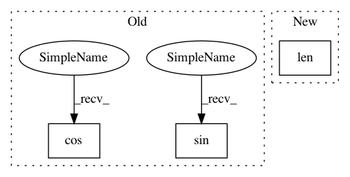

5d773c201466708f167bd7e98e5ded8c8c14d199,dipy/sims/tests/test_phantom.py,,f,#Any#,28
Before Change
Helper function used to define a mapping time => xyz
x=np.sin(t)
y=np.cos(t)
z=np.linspace(-1,1,len(x))
return x,y,z
After Change
x = np.linspace(-1,1,len(t))
y = np.linspace(-1,1,len(t))
z = np.linspace(-1,1,len(t))
return x,y,z
In pattern: SUPERPATTERN
Frequency: 3
Non-data size: 3
Instances
Project Name: nipy/dipy
Commit Name: 5d773c201466708f167bd7e98e5ded8c8c14d199
Time: 2012-12-04
Author: arokem@gmail.com
File Name: dipy/sims/tests/test_phantom.py
Class Name:
Method Name: f
Project Name: nipy/dipy
Commit Name: 5d773c201466708f167bd7e98e5ded8c8c14d199
Time: 2012-12-04
Author: arokem@gmail.com
File Name: dipy/sims/tests/test_phantom.py
Class Name:
Method Name: f
Project Name: scikit-image/scikit-image
Commit Name: f966ef79ae7c47b93029e065b3ee6686bab5bff7
Time: 2017-03-29
Author: jirka.borovec@seznam.cz
File Name: skimage/measure/fit.py
Class Name: LineModel
Method Name: predict_x
Project Name: scikit-image/scikit-image
Commit Name: f966ef79ae7c47b93029e065b3ee6686bab5bff7
Time: 2017-03-29
Author: jirka.borovec@seznam.cz
File Name: skimage/measure/fit.py
Class Name: LineModel
Method Name: predict_y